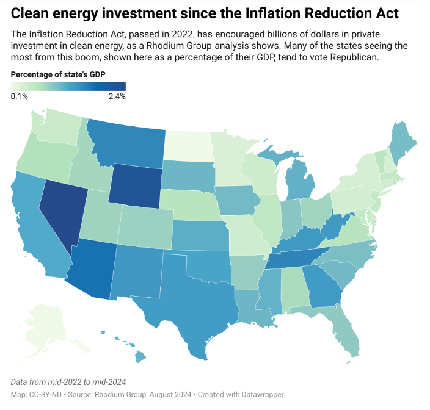

Energy Policy of US
The United States energy-policy framework reflects a tension between long-standing federal statutes passed by Congress and rapid shifts created through presidential executive action. As a result, clean-energy incentives, fossil-fuel development, environmental review, and emissions regulation can move in different directions depending on the administration in power.
Baseline Federal Statutes
Clean Air Act (CAA): The statutory foundation giving the Environmental Protection Agency legal authority to regulate greenhouse-gas emissions from power plants, industrial facilities, and motor vehicles.
National Environmental Policy Act (NEPA): Requires environmental-impact reviews for federal energy projects and often becomes a major legal arena for disputes over energy infrastructure.
Inflation Reduction Act (IRA, 2022) and Bipartisan Infrastructure Law (IIJA, 2021): Landmark federal laws that provide long-term tax credits and investment support for clean energy, including ITC, PTC, and 45V credits. These incentives are also tied to domestic manufacturing and local-content requirements.
Trump Administration Policy Direction
Policy focus: Energy dominance, fossil-fuel deregulation, rollback of environmental restrictions, and aggressive protectionism.
"Unleashing American Energy" executive orders: Lifted restrictions on oil, gas, and coal leasing on federal lands and offshore waters while streamlining NEPA review processes for pipelines and drilling projects.
Rescinding restrictions on LNG exports: Reversed previous pauses on new liquefied natural gas export permits, expanding fossil-fuel exports to global markets.
Rolling back EPA regulations: Weakened or repealed carbon-emission limits for coal- and gas-fired power plants and rolled back federal tailpipe-emissions mandates associated with electric-vehicle adoption.
Freezing unspent IRA funds: Used executive authority to pause, review, or redirect unallocated clean-energy grants under the IRA, shifting support toward domestic traditional-energy infrastructure and manufacturing.
